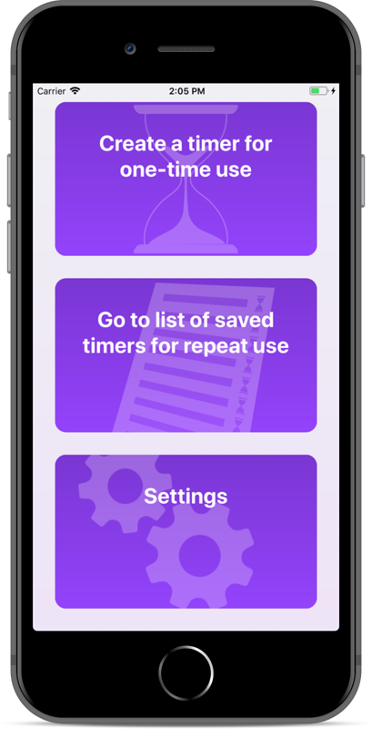
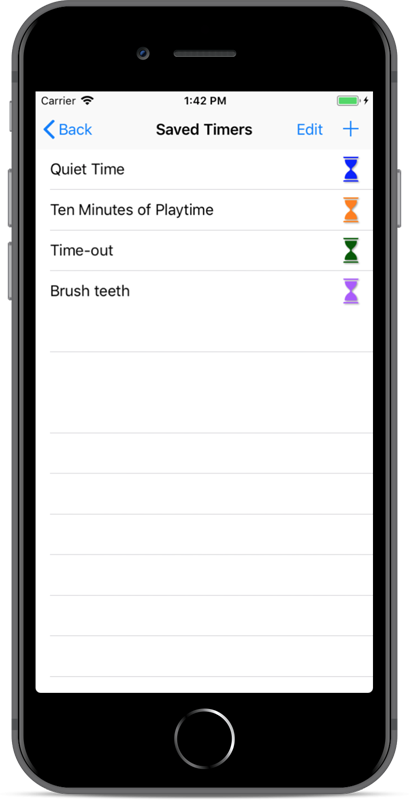
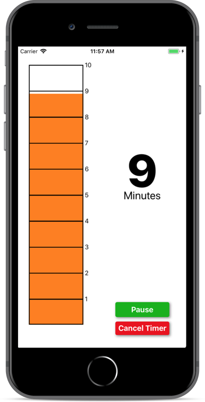
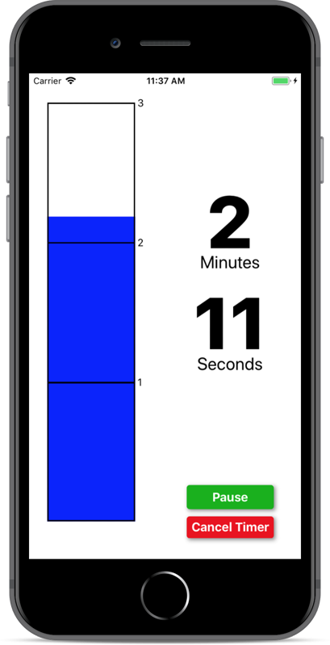
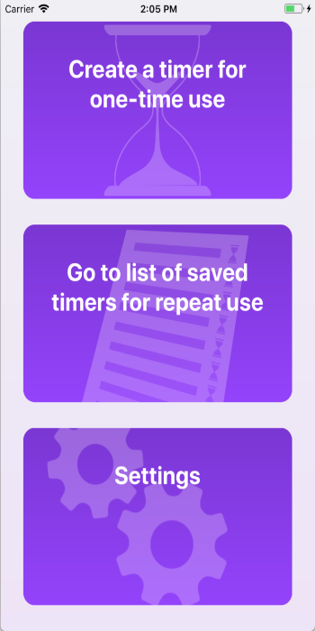
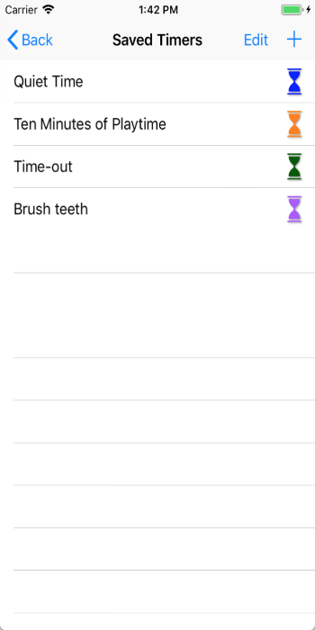
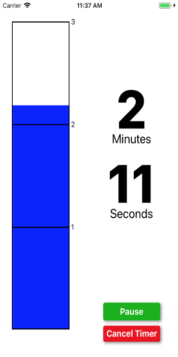
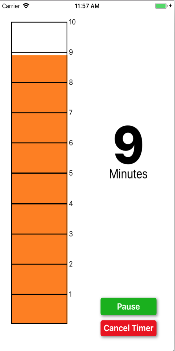

- 
- 
- 
- 





Visual Timer
Keep an eye on your timer!
Visual Timer lets you create, save, and use commonly used timers with a clear visual it's clear at a glance how much time is left.
Visual Timer was written with parents of small children in mind. It allows a preschooler whose sense of time is still developing to tell how much time is left, while also being useful for adults who want a quick visual to keep them on track.
Timer features:
- Name and save timers that you use repeatedly
- Make timer auto-start when selected
- Make timer pausable (or not! to prevent little fingers from pausing it)
- Make timer cancelable (or not!)
- Choose color of time bar
- Choose from more than 25 sounds for alerting you that timer is done, with choices varying from mellow and relaxing to annoying and unignorable.
- Choose whether to loop alert audio at the end so you can't possibly miss it
- Display can change between minutes only (for early math connections) or more precise minutes and seconds.